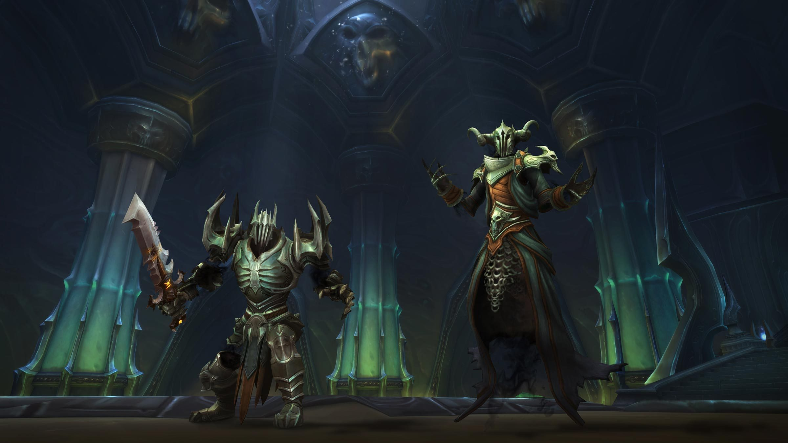
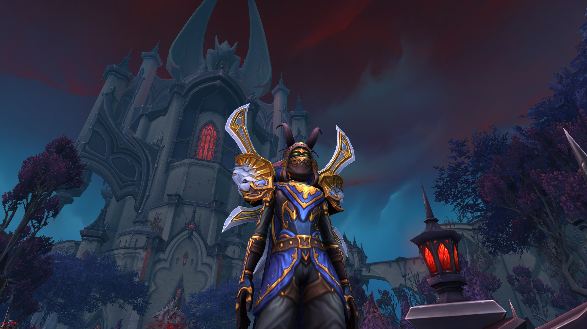
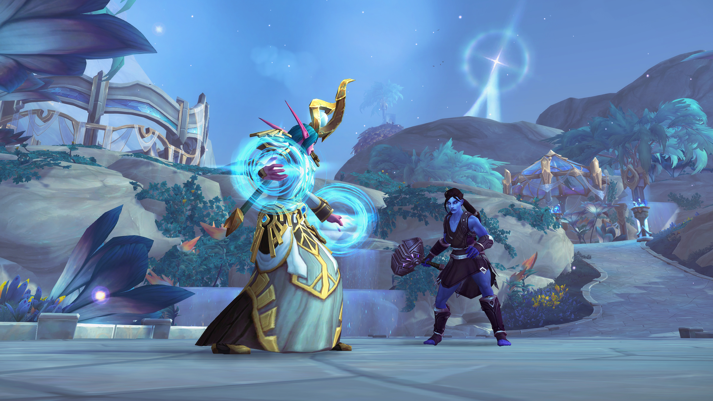
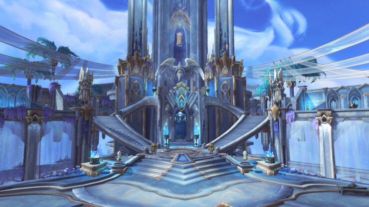
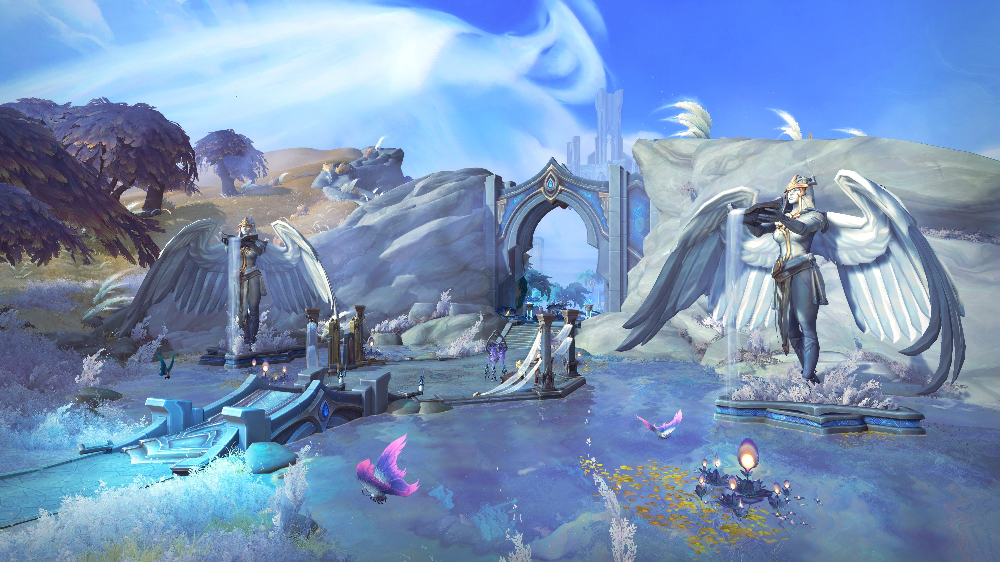
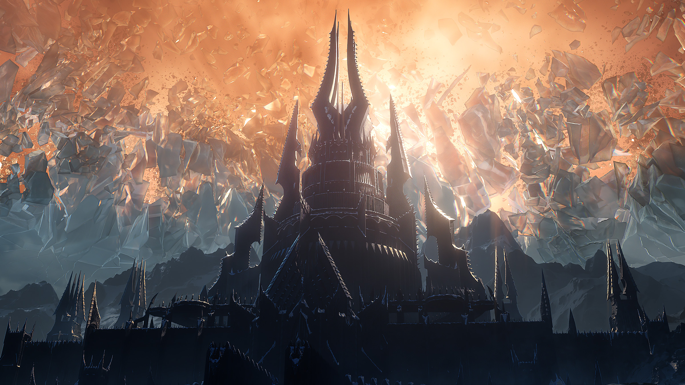

Screenshots






With a single act of destruction, Sylvanas Windrunner has ripped open the way to the afterlife. Azeroth’s staunchest defenders have been dragged into all-consuming darkness. An ancient force of death threatens to break its bonds and unravel reality.
Hidden realms of wonder and horror await any who would pass to the other side. The Shadowlands is home to an entire realm of the departed; it is a world between worlds whose delicate balance preserves life and death itself.
As one of Azeroth’s greatest champions, you have been granted the power to cross over in body and soul. Now you must investigate a conspiracy to unmake the cosmos, and help Warcraft legends journey back... or fulfill their ultimate destiny.
Align yourself with one of four Covenants—mysterious sects, each with their own ambition for the Shadowlands—to restore balance to the hereafter.
You’ll gain access to your Covenant’s Sanctum, where you’ll accept unique quests, undertake a sprawling covenant campaign, and call upon your allies to embark on important missions. You‘ll also earn unique abilities based on your Covenant and class, acquire a unique mount and visual appearance, and forge bonds with powerful souls, drawing on their essence to further customize your skills.
Once, the Jailer kept only the most dangerous souls in the cosmos confined in this eternal prison. Now, some of Azeroth’s greatest heroes are trapped here, and you’ll need to rescue them from the Jailer’s tower before he expends their very souls.